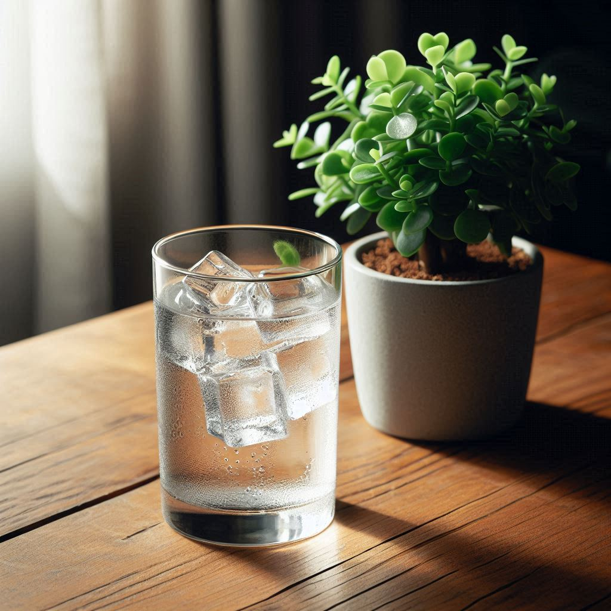

El agua potable es aquella que cumple con las condiciones necesarias para el consumo humano. Es decir, es apta para beber, cocinar y realizar otras actividades cotidianas sin riesgo de contraer enfermedades. Tener acceso a agua potable es fundamental para la salud pública, ya que previene enfermedades y promueve un mejor bienestar social.
El proceso de potabilización del agua es un conjunto de métodos por los cuales se eliminan las impurezas y contaminantes del agua para que esta sea apta para el consumo humano. Entre los métodos más comunes se encuentran:
El acceso a agua potable es esencial para el desarrollo humano. No solo es necesario para la supervivencia, sino que también juega un papel crucial en la promoción de la salud, el saneamiento y el desarrollo económico. Un suministro adecuado de agua potable puede ayudar a prevenir enfermedades como el cólera, la disentería y otras enfermedades transmitidas por el agua.
El acceso a agua potable tiene varios beneficios: